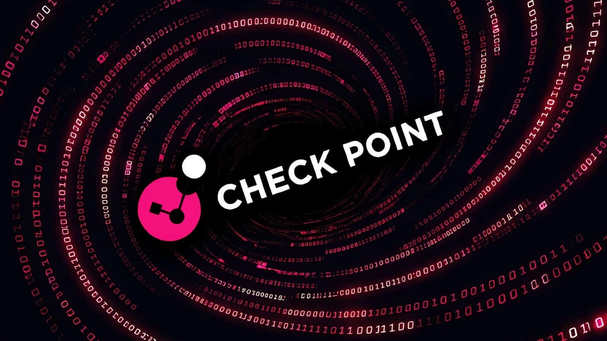

Check Point выпустила экстренные хотфиксы для уязвимости CVE-2026-123039 (CVSS 7.8) — локального повышения привилегий до root в процессе DynamicCLI операционной системы Gaia.Механика ошибки прозаична: корневой демон `dynamic_server` слушает локальный сокет `/tmp/dynamic_socket`, который создан общедоступным на запись (права 0777) и вообще не проверяет, кто подключился. Любой аутентифицированный локальный пользователь может одной записью в сокет заставить систему выполнить произвольную команду от имени root. Компания подтвердила активную эксплуатацию против «нескольких десятков» клиентов.
По данным Check Point Research, с 30 октября атакующие сканируют и атакуют незакрытые шлюзы Security Gateway: сначала вход через портал Mobile Access с помощью PHP2Shell — тех самых уязвимостей в PHP, которые нашёл ИИ и о которых мы уже писали, — затем повышение до root через CVE-2026-123039. Дальше злоумышленники оставляют веб-шеллы, ставят бэкдор TSGA и прокси-вредонос TSProxy (ранее замеченные в атаках на устройства Ivanti), перебираются с скомпрометированного шлюза на хост VMware ESXi и разворачивают там вайпер — уничтожатель данных. Каталог эксплуатируемых уязвимостей CISA уже пополнился этой записью.
Под ударом Force Firewall, серверы управления и логов, Multi-Domain-развёртывания и оркестраторы Maestro на версиях R81–R82.20; облачные Spark Firewalls и Smart-1 Cloud не затронуты. Это уже третья волна проблем Check Point за осень: в сентябре компания латала две эксплуатируемые RCE-дыры (CVE-2026-85102 и CVE-2026-93616), а за два года CISA внесла в свой каталог пять уязвимостей продуктов вендора, две из которых использовали вымогатели.
Если хотфикс нельзя поставить сразу, вендор рекомендует временно остановить процесс `dynamic_server` (команда `dbset process:dynamic_server` с сохранением) — но тогда перестанут работать Dynamic CLI-команды. Проверить, закрыта ли дыра, просто: `ls -l /tmp/dynamic_socket` должен показывать права 0660, а не 0777. Искать признаки взлома — по строкам «Rejected connection from unauthorized uid» в `/var/log/dynamicCli.log` и по командам, шедшим в обход штатной обёртки Clish; всплески таких записей стоит сопоставить с журналами аутентификации порталов. Если эксплуатация подтвердилась — считать шлюз скомпрометированным полностью: в задокументированной цепи атаки из него выпилили целый ESXi-хост с виртуалками, так что «перезагрузить и забыть» здесь не вариант.